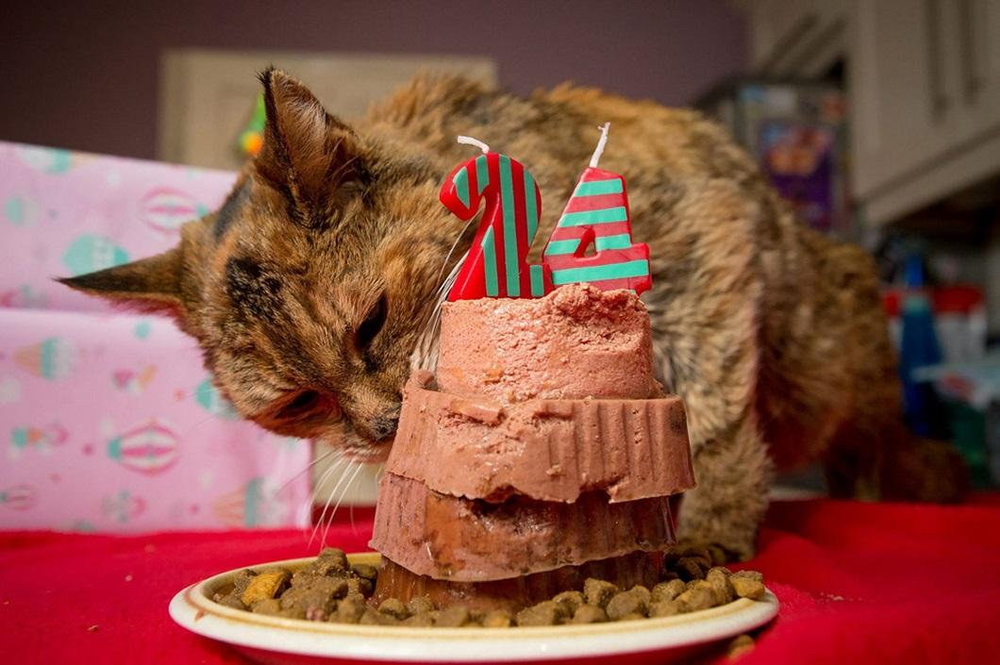
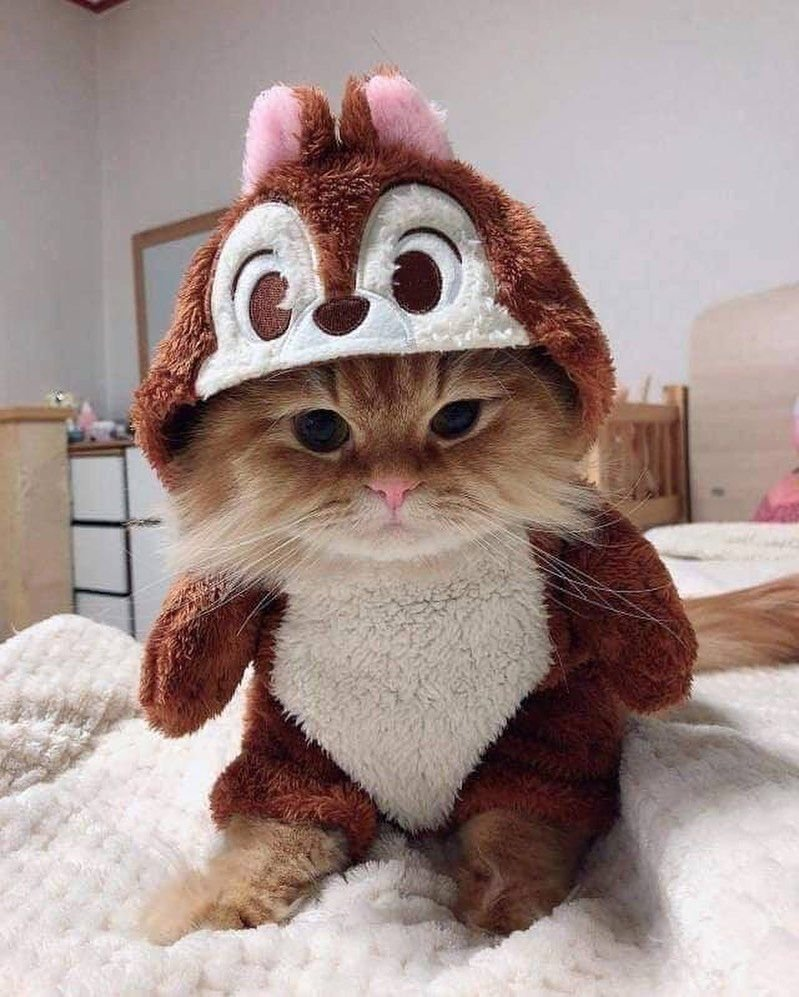

Как правильно выбрать себе вредного, но милого друга?

Биг

Главной причиной завести маленькое чудо в доме является острая нужда в любви
и внимании. Котики сильно привязываются к хозяевам,
чувствует настроение человека, сумеет вовремяприйти на помощь, успокоить и даже вылечить от плохого настроения.
Котик должен является полноправным членом семьи.
За такие проявления чувств, котик спасёт от одиночества, будет рядом
в трудную минуту, отвлечёт от забот и проблем.